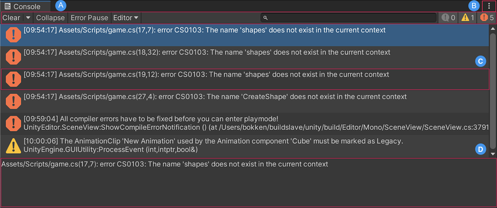

The Console window displays errors, warnings, and other messages the Unity Editor generates. These errors and warnings help you find issues in your project, such as script compilation errors. They also alert you about actions the Editor takes automatically, such as replacing missing meta files, which can cause an issue somewhere else in your project.
To help you debug your project, use the Debug class to print your own messages to the Console. For example, you can print the value of a variable at certain points in your script to track how the value changes.
To open the Console, from Unity’s main menu go to Window > General > Console.

A. The Console toolbar has options to control how to display messages, and to search and filter messages.
B. The More (⋮) menu has options to customize the Console window. You can open log files, control how much of each message is visible in the list, and set stack trace options.
C. The Console list displays an entry for each logged message. Select a message to display its entire text in the detail area. You can choose how many lines of each message to display here. For more information, refer to Log Entry.
D. The detail area displays the full text of the selected message. If you enable stack trace, the detail area displays references to specific lines in code files as clickable links.
The toolbar of the Console window has options to control how to display messages, and to search and filter messages.
| Property: | Description: |
|---|---|
| Clear | Removes any messages generated from your code but retains compiler errors. Opens a dropdown menu with the following options:
|
| Collapse | Displays only the first instance of recurring error messages. This is useful for runtime errors, such as null references, that are sometimes generated on each frame update. |
| Error Pause | Pauses playback when you call Debug.LogError from a script. Use this to freeze playback at a specific point in the execution and inspect the Scene. This option doesn’t pause playback when you call Debug.Log from a script. |
| [Attach-to-Player] | Opens a drop-down menu with options to connect to development Player builds running on your local machine or other remote devices, and displays their Player logs in the Console. This option is labeled with the name of the currently connected Player instance, or as Editor if the Console isn’t connected to a Player.
|
You can search Console messages for specific keywords from the Console search bar. As you type a search term, the Console filters messages to display only those that contain matching text. The Console highlights only the first match in the message text, and only if it’s in the visible part of the message.
You can search for anything that appears in any Console message, including numerals and special characters. For example, you can search for the time the Console logged a message.
The search looks for exact matches of what you type in the search bar. You can’t search for two different terms at once, or use common search engine operators.
You can also filter Console messages by type. Click the buttons beside the search bar to toggle:
| Button | Function |
|---|---|
|
Messages switch |
Displays the number of messages in the Console. Click to display or hide messages. |
|
Warnings switch |
Displays the number of warnings in the Console. Click to display or hide warnings. |
|
Errors switch |
Displays the number of errors in the Console. Click to display or hide errors. |
To customize the Console window, open the More (⋮) menu. It contains the following options:
| Option | Function |
|---|---|
| Open Player Log | Opens the log file for the Player build. For more information about Player logs, refer to Player-related log locations. |
| Open Editor Log | Opens the log file for the Editor. For more information about Editor logs, refer to Editor-related log locations. |
| Show Timestamp | Displays a timestamp on each Console message. |
| Log Entry | Adjusts the line count for each Console entry. Each Console entry can be up to 10 lines long. Note: The line count doesn’t affect the Console search function. If the matching text is on a hidden line, the search returns the message in the results, but doesn’t expand it to reveal or highlight the matching text. |
| Use Monospace font | Displays Console messages in Monospace font. |
| Strip logging callstack | Hides methods marked in script as [HideInCallstack] from the call stack in the detail area of a selected Console message. For more information, refer to HideInCallstackAttribute. |
| Stack Trace Logging | Controls the amount of detail in the stack trace information for Console messages and for log files. For more information, refer to Stack trace logging. |
| Binding Console Logs | Defines the logging level for the binding system. For more information about logging in the binding system, refer to Define logging levels. |